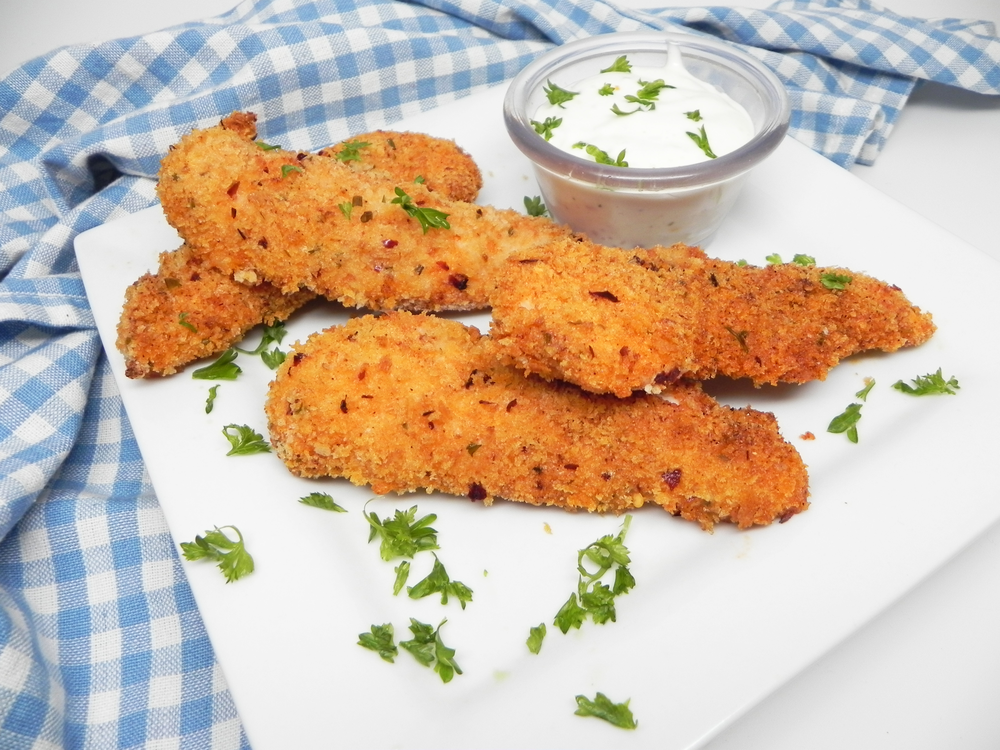

Spicy Chicken Nuggets

Everyone loves chicken nuggets, but sometimes we don't want all the fat that comes with deep frying. This recipe will give you the crispy crunchiness you love about chicken nuggets without the oil. This is an easy recipe and can replace your pre-made (processed, yuck!) frozen chicken nuggets! For more heat, just add some cayenne pepper to the breadcrumbs. Any dipping sauce will do!
Nutrition Facts
Per Serving: 246 calories; protein 29g; carbohydrates 25.9g; fat 5.2g; cholesterol 111.1mg; sodium 208.1mg.
Ingredients
- nonstick cooking spray
- ¼ cup all-purpose flour
- 1 large egg, beaten
- 1 cup panko breadcrumbs, or more as needed
- 1 tablespoon red pepper flakes
- ¼ teaspoon ground chili powder
- ¼ teaspoon ground paprika
- ¼ teaspoon garlic powder
- ¼ teaspoon dried chives
- 1 pound skinless, boneless chicken breast, cut into strips
Steps
- Preheat the oven to 350 degrees F (175 degrees C). Spray a baking sheet with cooking spray.
- Put flour in a bowl. Put egg in a second bowl. Pour panko, red pepper flakes, chili powder, paprika, and chives in a third bowl with a lid; mix until combined.
- Dip chicken strips in flour to dust them, then dredge in egg, making sure to let excess egg drop off, and then place in panko mixture. Cover with the lid and shake until chicken is well coated. Transfer to the prepared baking sheet.
- Bake in the preheated oven until no longer pink in the center and the juices run clear, 10 to 12 minutes.
Return to Main Page